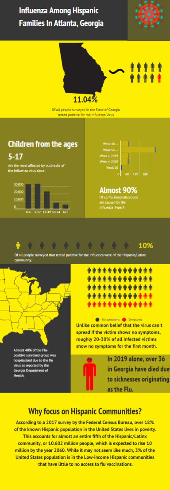

Influmation: La Clinica de Atlanta
English
Here at Influmation, our main goal is to provide those less fortunate the means to take care of themselves and their family, especially low-income Hipanic or Latinx families in the Metro-Altanta area. More specifically, we distribute Flu shots and tests conducted by medical personel authorized by Emory Hospital via clinic facility. All tests are free of charge if visitors provide proof of income or food stamps. We also partner with Atlanta's Mercedez Benz Stadium to conduct several miniature clinics during select Atlanta United and Falcons home games. We also hold an annual Día de los Muertos event on the field where families an place their shrines anywhere on the field and will have access to the same miniature clinic as in the selected games. In addition to the partnerships and the Main Clinic, we also distribute these test by means of mobile clinic truck. This truck will act similarly to Ice-Cream Trucks; In the first week of every month, it will communte through several neighborhoods in Atlanta with predominently Hispanic residency. These areas include but are not exclusive to: Marietta Square, Buford Highway, and Duluth.
.png)
.png)
Español
Aquí, en Influmation, nuestro principal objetivo es proporcionar a los menos afortunados los medios para cuidarse a sí mismos y a su familia, especialmente a las familias hipanicas o latinas de bajos ingresos en el área de Metro-Altanta. Más específicamente, distribuimos vacunas contra la gripe y pruebas realizadas por personal médico autorizado por el Hospital Emory a través de las instalaciones clínicas. Todas las pruebas son gratuitas si los visitantes proporcionan comprobantes de ingresos o cupones de alimentos. También nos asociamos con el Mercedez Benz Stadium de Atlanta para llevar a cabo varias clínicas en miniatura durante los selectos juegos locales de Atlanta United y Falcons. También realizamos un evento anual del Día de los Muertos en el campo donde las familias colocan sus santuarios en cualquier lugar del campo y tendrán acceso a la misma clínica en miniatura que en los juegos seleccionados. Además de las asociaciones y la Clínica Principal, también distribuimos estas pruebas por medio de un camión de clínica móvil. Este camión actuará de manera similar a Ice-Cream Trucks; En la primera semana de cada mes, se comunicará a través de varios vecindarios en Atlanta con residencia predominantemente hispana. Estas áreas incluyen, pero no son exclusivas de: Marietta Square, Buford Highway y Duluth.
Porque La Gripe / Why the Flu
